승강기기사 (2008-09-07 기출문제)
1과목: 승강기 개론
1. 로프식 엘리베이터의 카 꼭대기 틈새는 무엇에 의하여 결정되는가?
- 카의 정격속도
- 로프의 길이
- 건물의 높이
- 카의 적재용량
(정답률: 77%)

2. 유압파워 유니트에서 실린더로 통하는 압력배관 도중에 설치되는 수동밸브로서 이것을 닫으면 실린더의 기름이 파워 유니트로 역류하는 것을 방지하는 것으로 유압장치의 보수, 점섬 또는 수리 등을 할 때 사용되는 밸브는?
- 체크밸브
- 사이렌서
- 안전밸브
- 스톱밸브
(정답률: 76%)
3. 비상정지장치의 흡수에너지와 관계가 없는 것은?
- 비상정지장치의 적용 중량
- 적용 조속기의 동작속도
- 중력가속도
- 감속시간
(정답률: 63%)
4. 승강장 출입구 바닥 앞부분과 카 바닥 앞부분과의 틈의 너비는 몇 [cm]이하로 하여야 하는가? (단, 장애인용 엘리베이터가 아닌 경우이다.)
- 1
- 2
- 3
- 4
(정답률: 62%)
5. 소선의 강도에 의해서 E종으로 분류된 와이어로프의 파단 강도는 몇 [N/mm2]인가?
- 1320
- 1470
- 1620
- 1770
(정답률: 74%)
6. 다음 중 승객이 출입하는 동안에 승객과 도어의 충돌을 방지하기 위한 감지장치가 아닌 것은?
- 세이프티 슈
- 광전 장치
- 초음파 장치
- 도어 스위치
(정답률: 81%)
7. 비상용 엘리베이터에서 카와 승강장문을 열어 놓은 채로 카를 승강시킬 수 있는 스위치는?
- 비상호출스위치
- 1차 소방스위치
- 2차 소방스위치
- 비상정지스위치
(정답률: 75%)
8. 승객용 엘리베이터에서 카의 바닥면적이 4.0m2일 때 카의 정격하중으로 알맞은 것은?
- 1540kgf
- 1660kgf
- 1780kgf
- 1900kgf
(정답률: 24%)
9. 각층 정지운전에 관한 설명 중 올바르지 않은 것은?
- 아침 저녁으로 승객이 많을 때 실시
- 아파트 등에서 방범을 목적으로 실시
- 각층 정지스위치를 ON시키면 각층을 정지하면서 목적층까지 운행
- 주로 야간에 실시
(정답률: 77%)
10. 유압 엘리베이터의 상승운전시 모터가 구동되는 구간을 바르게 설명한 것은?
- 카가 기동 후에 구동하고 정지한 직후에 회전을 멈춘다.
- 카가 기동하면서 구동하고 정지 직전에 회전을 멈춘다.
- 카가 기동하기 전에 구동하고 정지한 직후에 회전을 멈춘다.
- 카가 기동하면서 구동하고 정지와 동시에 회전을 멈춘다.
(정답률: 50%)
11. 다음 중 에스컬레이터에 설치하여야 할 안전장치에 속하지 않는 것은?
- 인레트 스위치
- 구동체인 안전장치
- 조속기장치
- 스프로킷 파단 안전장치
(정답률: 50%)
12. 권상기의 주 도르래의 홈 밑을 도려낸 언더 컷 홈을 사용하는 이유로 가장 알맞은 것은?
- 제조시 가공을 편리하게 하기 위해서
- 로프와의 마찰계수를 크게 하기 위해서
- 로프직경을 줄이기 위해서
- 마모를 줄이기 위해서
(정답률: 85%)
13. 기계실 내에서 주요한 기기로부터 기둥이나 벽까지의 수평거리는 일반적으로 몇 [cm]이상으로 하여야 하는가?
- 20
- 30
- 40
- 50
(정답률: 54%)
14. 다음 중 유입완충기의 성능을 평가하는 항목에 포함되지 않는 것은?
- 감속도
- 유입량
- 플런저의 행정
- 플런저의 복귀시간
(정답률: 49%)
15. 카의 적재하중이 1000kgf, 카의 전자중 1600kgf, 로프 전자중 45kgf, 로프 본수는 5본이고 로프 파단력이 5990kgf이다. 로프 거는 방식을 1:1로 하였을 경우 주로프의 안전율은 약 얼마인가?
- 10.3
- 11.3
- 12.5
- 13.2
(정답률: 49%)
16. 상부에 기계실이 있는 로프식 엘리베이터에서 기계실 안에 있는 장치가 아닌 것은?
- 권상기
- 조속기
- 제어반
- 급유기
(정답률: 76%)
17. VVVF제어에서 인버터 제어방식을 나타내는 시스템은?
- PWM (Pulse Width Modulation)
- PAM (Pulse Amplitude Modulation)
- 교류궤환 전압제어
- 사이리스터 전압제어
(정답률: 76%)
18. 수평보행기의 디딤면이 고무제품 등 미끄러지기 어려운 구조일 경우에는 경사도를 몇 [°]이하고 할 수 있는가?
- 10
- 12
- 15
- 20
(정답률: 43%)
19. 구조가 간단하나 착상오차가 크므로 최고 30m/min 이하에만 적용이 가능한 엘리베이터의 속도 제어방식은?
- 교류 1단 속도제어
- 교류 2단 속도제어
- 교류 궤환전압제어
- 가변전압가변주파수제어
(정답률: 71%)
20. 로프와 도르래 사이의 미끄러짐에 대한 설명으로 옳은 것은?
- 로프의 감기는 각도가 클수록 미끄러지기 쉽다.
- 카의 가속도와 감속도가 작을수록 미끄러지기 쉽다.
- 카와 균형추측의 로프에 걸리는 중량비가 작을수록 미끄러지기 쉽다.
- 로프와 도르래의 마찰계수가 낮을수록 미끄러지기 쉽다.
(정답률: 66%)
2과목: 승강기 설계
21. 다음 중 도어시스템을 설명한 것으로 적절하지 않은 것은?
- 도어 개폐장치는 일반적으로 카의 하부에 설치한다.
- 도어의 개폐는 일반적으로 암(arm) 또는 체인에 의한다.
- 도어 판넬은 주로 강판을 성형한 것에 적절한 보강을 하여 사용한다.
- 도어는 도어레일, 도어행거 등에 의해 원활히 개폐할 수 있도록 매달아 동작시킨다.
(정답률: 77%)
22. 기어감속비 49:2, 도르래지름 540mm, 전동기입력 주파수 60Hz, 극수 4, 전동기의 회전수 슬립이 4%일 때 엘리베이터의 정격속도는 얼마인가?
- 90[m/min]
- 1⑤[m/min]
- 120[m/min]
- 150[m/min]
(정답률: 48%)
23. 교류 승강기에서 카의 자중이 1350kgf, 적재하중이 1000kgf, 균평추 프레임의 무게가 300kgf이고, 오버 밸런스율이 45%일 때, 균형추에는 몇 [kgf]의 추를 실어야 하는가?
- 1200
- 1300
- 1500
- 1600
(정답률: 54%)
24. 유입식완충기의 최소충격행정(STROKE)은 카 정격 속도의 115%에서 적용범위의 중량을 충돌시킨 경우로 설정한다. 정격속도가 120m/min일 경우 필요한 최소 행정은 몇 [mm]인가?
- 152
- 207
- 270
- 422
(정답률: 59%)
25. 다음 중 엘리베이터의 지진에 대한 대책 중 가장 우선적으로 고려하여야 할 사항은?
- 관제운전장치의 설치
- 가이드 레일에 대한 보강대책
- 승강도내의 동출물에 대한 대책
- 주로프의 도르래로부터의 벗겨짐 방지대책
(정답률: 64%)
26. 모듈(MODULE)이 4인 스퍼 외접기어의 잇수가 각각 30, 60이라고 할 때 양축간의 중심거리는 얼마인가?
- 90mm
- 180mm
- 270mm
- 360mm
(정답률: 71%)
27. 카 바닥 및 카틀 부재의 허용 가능한 상부체대의 최대 처짐량은 전장(span)에 대하여 얼마 이하이어야 하는가?
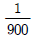
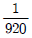
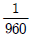
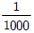
(정답률: 80%)
28. 1200형(스텝폭 1m)인 에스컬레이터의 충고(rise)가 3.5m일 때 스텝면의 수평투영면적은 약 [m2]인가?
- 3
- 4
- 5
- 6
(정답률: 30%)
29. 교류 전동기의 제어방식 중 전압 및 주파수를 동시에 제어 가능한 방식은?
- vvvf제어
- 교류궤환제어
- 교류 2단 속도제어
- 교류 1단 속도제어
(정답률: 81%)
30. 엘리베이터의 구조 설계시 고려할 사항으로 옳지 않은 것은?
- 승강로의 벽 또는 울 및 출입문은 불연재료로 만들거나 씌워야 한다.
- 승객용 엘리베이터에는 외부에서 구출할 수 있는 비상구출구를 설치하여야 한다.
- 엘리베이터의 전동기 및 권상기는 다른 엘리베이터와 공용으로 사용할 수 있다.
- 승객용 엘리베이터에는 카 벽에도 비상구출구를 설치할 수 있다.
(정답률: 74%)
31. 다음 중 조속기에 대한 설명으로 옳지 않은 것은?
- 정격속도가 60m/min일 때 과속스위치의 작동속도는 78m/min이하로 한다.
- 정격속도가 45m/min일 때 과속스위치의 작동속도는 63m/min이하로 한다.
- 조속기에 의한 균형추 측의 비상정지 작동속도는 카측의 조속기 작동속도보다 큰 속도로 한다.
- 정격속도의 1.3배 보다 낮은 속도로 조속기 캣치를 작동시키도록 한다.
(정답률: 41%)
32. 가이드 레일에 관한 설명 중 옳지 않은 것은?
- 레일의 가장 좋은 규격은 제조와 설치시 승강로내의 반입이 편리하도록 5m로 하고 있다.
- 레일은 승강로 평면내에서 카와 균형추의 위치를 규제한다.
- 레일 규격의 호칭은 마무리 가공전의 소재의 1m당의 중량을 라운드 번호로 하여 「K 레일」를 붙여서 사용한다.
- 강판을 접어서 만든 3k, 5k 레일은 균형추용으로만 사용될 수 있으며, 균형추에 비상정지장치가 있는 경우에도 사용된다.
(정답률: 65%)
33. 에스컬레이터 제동기의 강도는 적재하중을 작용시키지 않고 디딤판이 상승 할 때의 정지거리가 어느 정도이어야 하는가?
- 0.1m이상 0.6m이하
- 0.2m이상 0.7m이하
- 0.3m이상 0.6m이하
- 0.2m이상 0.8m이하
(정답률: 55%)
34. 카바닥과 카틀의 부재에 작용하는 하중의 연결 중 옳은 것은?
- 상부체대 - 굽힘력
- 하부체대 - 전달력
- 카주 - 비틀림
- 카바닥 - 장력
(정답률: 59%)
35. 에스컬레이터 및 수평보행기의 일반구조에 관한 사항으로 옳지 않은 것은?
- 에스컬레이터의 경사도는 30도이하, 수평보행기의 경사도는 12도이하로 하여야 한다. 다만, 에스컬레이터의 충고가 6m이하일 때 35도 이하로 할 수 있고, 수평보행기 디딤면이 고무제품일 경우 15도 이하로 할 수 있다.
- 디딤판의 양쪽에 난간을 설치하고 난간 윗부분의 핸드 레일과 디딤판이 동일방향 및 동일속도로 움직여야 한다. 다만, 옥외에 설치되는 경우에는 핸드레일을 고정식으로 할 수 있다.
- 사람이나 물건이 에스컬레이터 또는 수평보행기 각 부분에 끼이거나 부딪치는 일이 없도록 안전한 구조이어야 한다.
- 에스컬레이터 디딤판의 속도는 30m/min이하로 하여야 하고 수평보행기 디딤판의 속도는 60m/min 이하로 하여야 한다.
(정답률: 65%)
36. 전부하 회전수가 1500rpm이고 출력이 15kW인 전동기의 전부하 토크는 약 몇 [kgㆍm]인가?
- 9.76
- 19.48
- 4948
- 9740
(정답률: 51%)
37. 다음 중 응력에 대한 관계식으로 적절한 것은?
- 탄성한도 ＞ 허용응력 ≥ 사용응력
- 탄성한도 ＞ 사용응력 ≥ 허용응력
- 허용응력 ＞ 탄성한도 ≥ 사용응력
- 허용응력 ＞ 사용응력 ≥ 탄성한도
(정답률: 65%)
38. 변압기 용량을 산정할 때 교류 엘리베이터의 경우 전동기의 정격전류가 50A이하인 경우 전류값은 정격 전류의 몇 배로 계산하는가?
- 1.1배
- 1.25배
- 1.5배
- 2배
(정답률: 56%)
39. 동력전원설비 용량의 계산에서 여러 대의 엘리베이터가 설치되어 있는 경우에 부등율을 적용한다. 부등율을 1로 하여야 하는 것은?
- 비상용 엘리베이터
- 침대용 엘리베이터
- 전망용 엘리베이터
- 화물용 엘리베이터
(정답률: 70%)
40. 승강기 감시반에 관한 설명으로 옳지 않은 것은?
- 일반 감시반과 컴퓨터 감시반이 있다.
- 일반 감시반에는 분석 기능이 없다.
- 감시반의 기능과 비상호출 기능은 별개이다.
- 컴퓨터 감시반은 도어의 개폐상태를 감시할 수 있다.
(정답률: 56%)
3과목: 일반기계공학
41. 단면이 직사각형(b×h)인 단순보의 중앙에 집중하중(P)에 작용할 때 최대 처짐량에 대한 설명 중 틀린 것은? (단, 단순보 지지점 사이의 거리를 L이라 한다.)
- 단면의 높이(h)의 제곱에 반비례한다.
- 지지점 사이의 거리(L)의 3승에 비례한다.
- 집중하중(P)의 크기에 비례한다.
- 단면의 폭(b)에 반비례한다.
(정답률: 43%)
42. 지름 50mm인 축에 폭이 150mm인 미끄럼 베어링을 설치하려고 한다. 베어링이 받는 전체 하중이 1200kgf이면 베어링 압력은 몇 kgf/mm2인가?
- 0.16
- 0.20
- 0.32
- 0.40
(정답률: 37%)
43. 일반적인 심 용접(seam welding)의 특징 설명으로 틀린 것은?
- 용접봉의 강도가 우수하여야 한다.
- 산화작용이 적다.
- 박판과 후판의 용접이 가능하다.
- 가열 범위가 좁아 변형이 적다.
(정답률: 44%)
44. 철강재료 중 수중에서의 내식성이 가장 좋은 것은?
- 열간압연 강판
- 일반구조용 압연강재
- 스테인리스강
- 기계구조용 압연강재
(정답률: 74%)
45. 지름 100mm의 저탄소 강재를 회전수 200rpm으로 하여 갈이 100mm를 1회 선반 가공하는데 2.5분이 소요되었다. 이송속도(mm/rev)는 약 얼마인가?
- 0.1
- 0.15
- 0.2
- 0.25
(정답률: 29%)
46. 알루미늄의 성질에 대한 설명으로 틀린 것은?
- 순수한 알루미늄은 주조가 곤란하다.
- 비중이 2.7로 작고, 용융점이 660℃정도이다.
- 전기 및 열의 양도체이다.
- 표면에 산화막이 형성되지 않아 부식이 쉽게 된다.
(정답률: 65%)
47. 5mm이상의 강판 리벳이음에서 코킹작업이 끝난 후 더욱 더 기밀을 완전하게 우지하기 위하여 강판을 공구로 때려 밀착시키는 작업은?
- 시밍(seaming)
- 플러링(fullering)
- 업세팅(opsetting)
- 트리밍(trimming)
(정답률: 53%)
48. 그림과 같이 스프링을 직렬로 연결한 합성스프링 장치에서 처짐량이 40mm일 때 작용한 하중은 약 몇 kgf인가? (단, k1=5kgf/cm, k2=8kgf/cm 이다.)
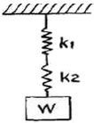
- 520
- 52
- 123
- 12.3
(정답률: 39%)
49. 강재 표면의 홈이나 개재물, 탈탄층 등을 제거하기 위하여 될 수 있는 대로 얇게 그리고 타원형 모양으로 표면을 깎아내는 가스 절단 가공법은?
- 블랭킹
- 산소창 절단
- 스카핑
- 아크 에어 가우징
(정답률: 48%)
50. 유압 주속장치 중 유압 에너지의 축적, 압력보상, 맥동제거 및 충격 완충의 역할을 하는 것은?
- 증압기
- 탱크용 필터
- 어큐물레이터
- 스트레이너
(정답률: 63%)
51. 원형 소재의 테이퍼 절삭가공에 가정 적합한 공작 기계는?
- 선반
- 밀링 머신
- 보링 머신
- 드릴링 머신
(정답률: 65%)
52. 일반 구조용 압연강재에 관한 설명으로 옳은 것은?
- 강판, 강대, 평강 등으로 사용할 수 없다.
- KS기호로는 SM330, SM400등이 있다.
- 탄소 함유량은 0.50% 이상이며 최저 인장강도는 600N/mm2이상이어야 한다.
- 등변 ㄱ형강, 부등형 ㄱ형강, ㄷ형강, T형강, H형강 등의 형강으로 사용할 수 있다.
(정답률: 60%)
53. 유압기기에서 유량제어 밸브에 속하는 것은?
- 스로틀 밸브(throttle valve)
- 셔틀 밸브(shuttle valve)
- 시퀀스 밸브(sequence valve)
- 4방향 밸브(4-way valve)
(정답률: 64%)
54. 호칭 번호 100번의 롤러 체인용 스프로킷 휠에서 잇수가 40일 때 피치원 지름은 약 몇 mm인가?
- 404.67
- 304.67
- 454.54
- 354.54
(정답률: 44%)
55. 펌프의 캐비테이션(공동현상) 방지책으로 틀린 것은?
- 펌프의 설치 위치를 낮게 하여 흡입 양정을 짧게 한다.
- 퍼프의 회전수를 작게 한다.
- 양흡입 펌프를 단흡입 펌프로 바꾼다.
- 2대 이상의 펌프를 사용한다.
(정답률: 61%)
56. 두 축의 상대위치에 대하여 기어를 분류하면 평행 축 기어, 교차축 기어 및 엇갈림축 기어가 있다. 교차 축 기어에 해당되는 기어는?
- 크라운 기어
- 웜 기어
- 하이포이드 기어
- 스퍼 기어
(정답률: 38%)
57. 전단가공의 종류가 아닌 것은?
- 펀칭
- 드로잉
- 세이빙
- 피어싱
(정답률: 50%)
58. 2톤의 하중을 올리는 나사 잭을 설계하려고 한다. 축 방향 하중과 비틀림 하중을 동시에 받는다면 나사의 바깥 지름은 약 몇 mm이상이어야 하는가? (단, 나사부 재질의 허용 응력은 8kgf/mm2이다.)
- 18
- 20
- 24
- 26
(정답률: 27%)
59. 압도가 작고, 연한 수돌에 작은 압력으로 가압하면서, 가공물에 이송을 주고, 동시에 숫돌에 진동을 주어 표면을 정밀 가공하는 것은?
- 초음파 가공
- 선삭]
- 슈퍼피니싱
- 배럴가공
(정답률: 46%)
60. 지름이 10cm인 축에 6MPa의 최대 전단응력이 발생했을 때 비틀림 모멘트는 약 몇 Nㆍm인가?
- 589
- 1767
- 6280
- 1178
(정답률: 52%)
4과목: 전기제어공학
61. 계단입력에 대한 시스템의 바람직한 응답특성을 출력하기까지의 시간은?
- 상승시간
- 무응답시간
- 시정수
- 세틀링시간
(정답률: 50%)
62. 그림과 같은 단자 1, 2사이의 계전기접점회로 논리식은?
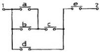
- {(a+b)d+c}e
- {(ab+c)d}+e
- {(a+b)c+d}e
- (ab+d)c+e
(정답률: 66%)
63. 다음의 전동력 응용기계에서 GD2 의 값이 작은 것에 이용될 수 있는 것으로서 가장 바람직한 것은?
- 압연기
- 냉동기
- 송풍기
- 승강기
(정답률: 56%)
64. 자동제어 계통의 조작순서로 옳은 것은?
- 검출단→조작량→조작부
- 조절량→조절부→조작단
- 조절부→검출부→조작부
- 검출부→조절부→조작부
(정답률: 68%)
65. 피드백제어계의 특징이 아닌 것은?
- 노동조건의 향상 및 위험한 환경의 안정화를 기할 수 있다.
- 생산속도를 향상시키고 생산량을 크게 증대시킬 수 있다.
- 자동장치의 운전수리 및 보관에 도고의 지식과 능숙한 기술이 있어야 한다.
- 설비의 일부에 고장이 있어도 전체 생산라인에 영향을 미치지 않는다.
(정답률: 71%)
66. 그림과 같은 블록선도에서 C(S)/R(S)에 대당 되는 것은?
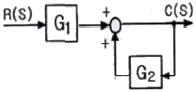
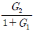
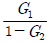
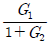
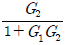
(정답률: 57%)
67. PI동작의 전달함수는? (단, Kp는 비례감도이다.)
- Kp
- KpsT
- Kp(1+sT)
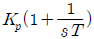
(정답률: 63%)
68. 어떤 저항에 전압 100V, 전류 50A를 5분간 흘렸을 때 발생하는 열량은 약 몇 [kcal]인가?
- 90
- 180
- 360
- 720
(정답률: 63%)
69. 잔류편차와 사이클링이 없어 널리 사용되는 동작은?
- I동작
- D동작
- P동작
- PI동작
(정답률: 76%)
70. 3상 교류저원을 컨버터로 직류 변환하고 다시 인버터로 PWM제어하여 교류전압을 발생시켜 전동기에 입력, 제어 하는 방식은?
- 교류 1단속도제어방식
- 교류 2단속도제어방식
- VVVF방식
- 교류 궤환제어방식
(정답률: 72%)
71. PLC(Programmable Logic Controller)의 출력부에 설치하는 것이 아닌 것은?
- 전자개폐기
- 솔레노이드밸브
- 열동계전기
- 시그널 램프
(정답률: 63%)
72. 권선형 유도전동기의 기동방법으로 가장 적당한 것은?
- 전전압기동법
- 리액터기동법
- 기동보상기법
- 2차 저항법
(정답률: 62%)
73. 3상 농형유도전동기의 속도제어방법이 아닌 것은?
- 극수변환
- 2차저항제어
- 1차전압제어
- 주파수제어
(정답률: 57%)
74. 조작량(manipulated variable)은 제어요소가 무엇에 주는 양을 말하는가?
- 기준입력
- 제어대상
- 궤환요소
- 제어편차
(정답률: 76%)
75. 절연저항을 측정하기 위해 사용되는 계측기는?
- 메거
- 휘스톤브리지
- 켈빈브리지
- 저항계
(정답률: 74%)
76. 역률이 80%이고, 무효전력이 300Var인 부하를 4시간 사용할 때의 소비전력량은 몇 [kWh]인가?
- 1.2
- 1.6
- 1.8
- 2.0
(정답률: 37%)
77. 어떤 소일에 흐르는 전류가 0.01초 사이에 일정하게 50A에서 10A로 변할 때 20V의 기전력이 발생하면 자기인덕턴스는 몇 [mH]인가?
- 5
- 10
- 20
- 40
(정답률: 42%)
78.
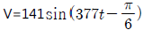
인 파형의 주파수는 약 몇 [Hz]인가?- 50
- 60
- 100
- 377
(정답률: 53%)
79. 회로에서 A와 B간의 합성저항은 몇 [Ω]인가? (단, 각저항의 단위는 모두 Ω이다.)
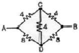
- 2.66
- 3.2
- 5.33
- 6.4
(정답률: 60%)
80. 다음 중 궤환제어계의 특징이 아닌 것은?
- 정확성의 증가
- 비선형성과 왜형에 대한 효과의 감소
- 계의 특성 변화에 대한 입력 대 출력비의 감도 감소
- 감대폭의 감소
(정답률: 44%)